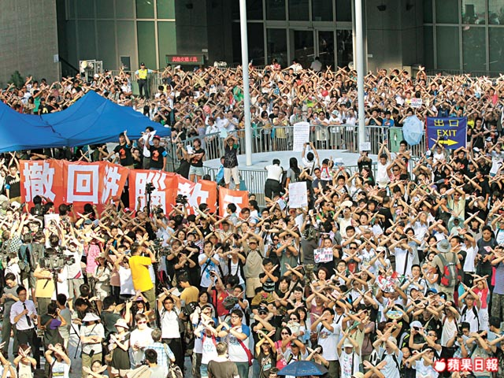
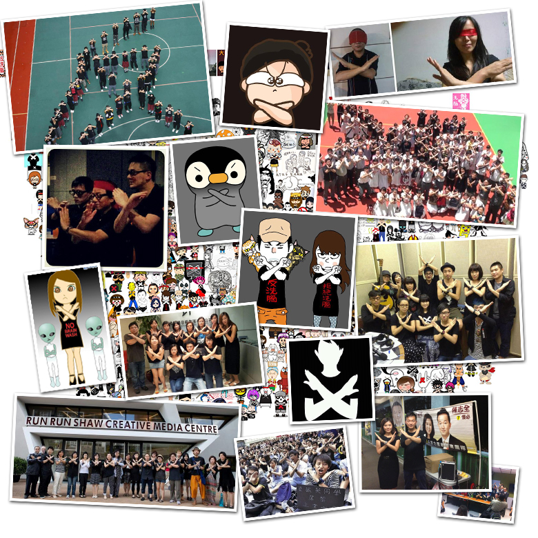
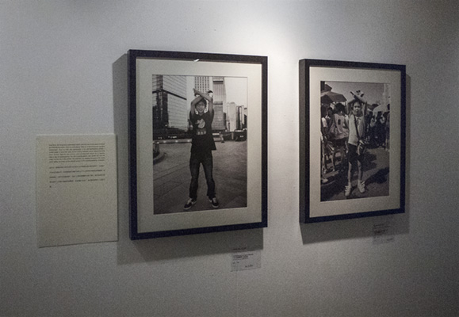

7.29 保護腦袋 –反對洗腦國民教育科
|


Artist Statement 創作自述:
Year 2012, the Hong Kong government strictly enforces over young pupils the Moral and National Education, which is a beautifying 'make-up' of the Communist mainland Government. Thus, on 29th July, participated in the anti-brainwashing protest, I invited pupils to cross their arms in front of their forehead, which means protecting their brains against the policy, and photograph them as a record.
After a day of photographing, this arm-crossing gesture was spread out over the crowd. At the end of the protest, the organizer has adopted the gesture for media photo taking, and later on the definite symbol of the Anti-Brainwashing movement.
2012年，香港政府強行對年幼學子推行為中共政權塗脂抹粉的國民教育科。 於是我在7月29日反洗遊行中，沿途邀請學生用雙手在頭上打叉以表示對抗洗腦教育保護腦袋，並拍照記錄。
一整天的拍攝活動中，沿途人士看到這個動作並傳了開去，遊行完結時主辦單位借用了上述動作讓傳媒拍團體照，及後該動作成為了「對抗國民教育科」公認的符號。
|  |
| The organizer has adopted the gesture for media photo taking 遊行尾升，主辦單位學民思潮呼籲以此動作給傳媒拍照 |
| later on, the gesture has become the definite symbol of the Anti-Brainwashing movement 後來發展成整個反國教運動的代表符號 |
|  |
| Participating Hong Kong Art School "Art Fair'12 Take Art Home!" 參與香港藝術學院"Art Fair'12 Take Art Home!" |
|  |